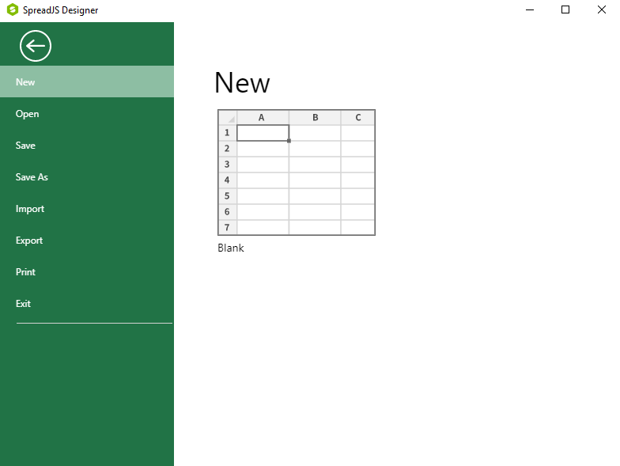
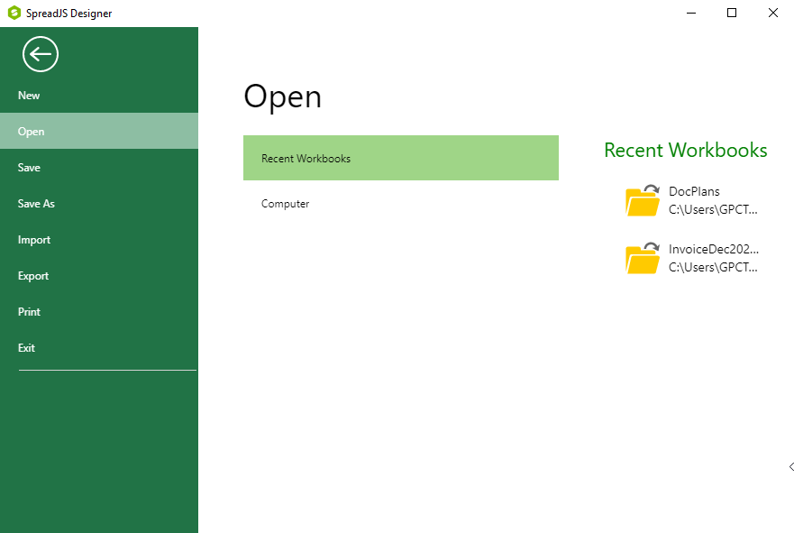
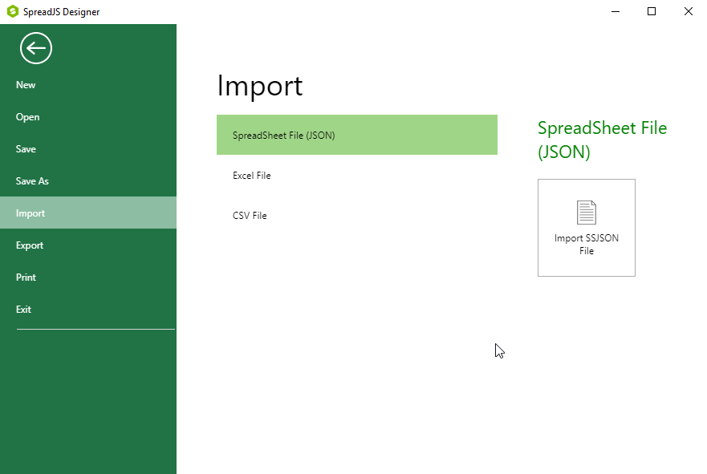
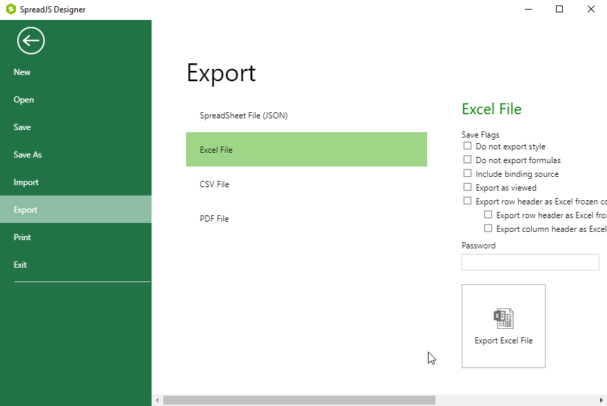

You can open and save existing Excel-formatted (.xlsx), comma-delimited (.csv), and Spread files (.ssjson) files. Alternatively, if you want to set options for how the Designer imports the content from these files, you can choose to import them.
While saving files, SpreadJS remembers the sheet view position whenever a workbook is saved. Just like in Excel, the next time you open the same workbook, it will automatically scroll to the position where you left off previously before saving it. This feature uses the top left cell of the worksheet to keep the sheet view position intact when users save a workbook. For example - Let's say the top left cell was A10 when you saved your workbook for the last time. Now, when a user opens the same workbook again, the sheet will automatically be scrolled to have that cell (A10) at the top left position.
To open a new file, click File , then choose New. In the New dialog, click on Blank to open a new spreadsheet.

To open an existing file, click Open in the toolbar, or click File, then choose Open. In the Open dialog, browse to find the file you want to open. You can restrict the type of files displayed as you browse by choosing a file type from the drop-down list.

To import an existing file and choose settings for how it is imported, click File, then choose Import. On the Import menu page, choose the type of file you want to import, then specify the settings for importing your file.

When you are finished editing the spreadsheet you have opened or created, you can save the spreadsheet to Spread file format (.ssjson), to an Excel format, or to a comma-delimited (.csv) file. The files you save in these formats can be re-opened by the SpreadJS Designer, or loaded into the SpreadJS widget in your application.
To save your spreadsheet, click Save in the toolbar, or click File, then choose Save. In the Save dialog, browse to find the path you want to save your file to, specify its name, and set its type.
You can use the Save or Save As option to save to a JavaScript (.js) file. This file type can only be loaded with the fromJSON method.
If you prefer, you can export your spreadsheet to Spread file (.ssjson), Excel (.xlsx), comma-delimited (.csv), or JavaScript (.js) format. When you choose to export to Excel or comma-delimited format, you can specify options about how the spreadsheet is exported.
To export your spreadsheet, click File, then choose Export. In the Export menu page, choose the type of file you want to export to, then specify the settings for exporting your file from Excel File section.
